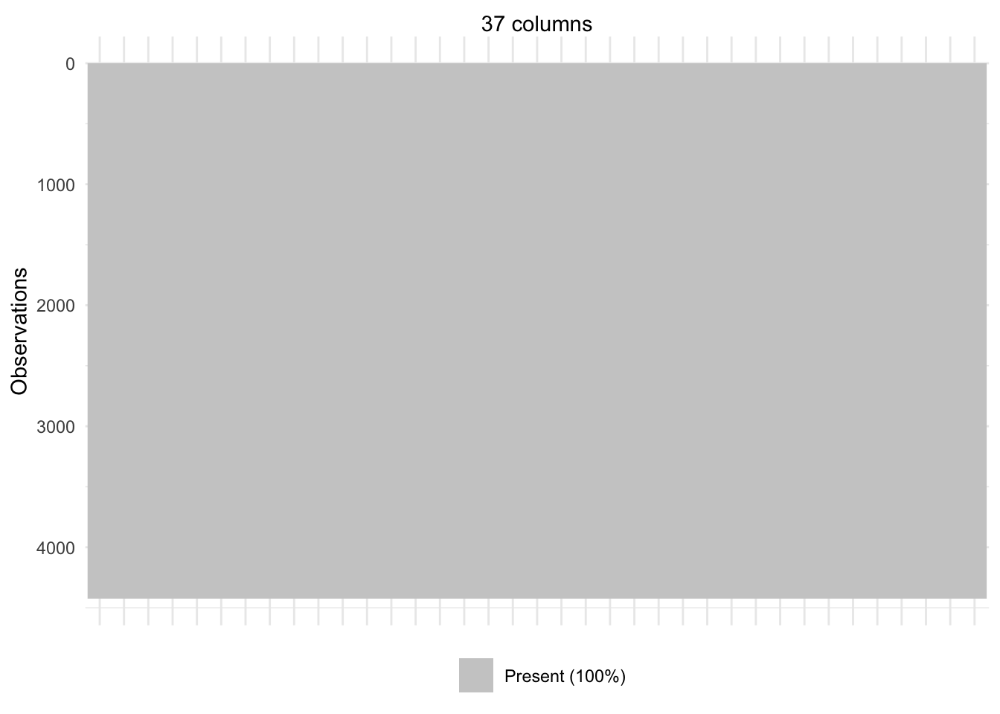
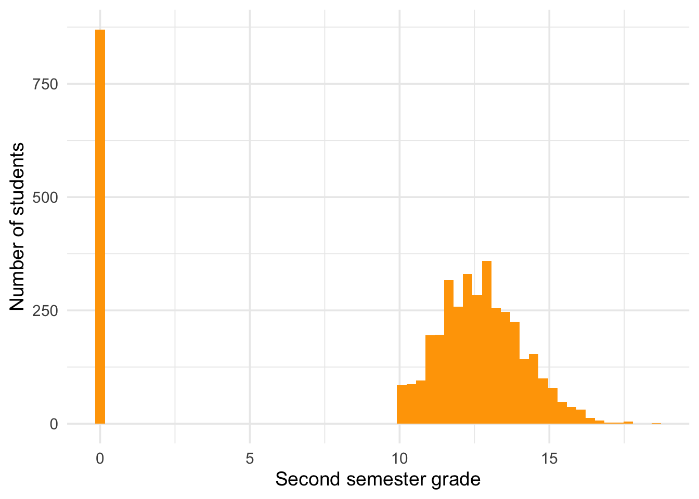
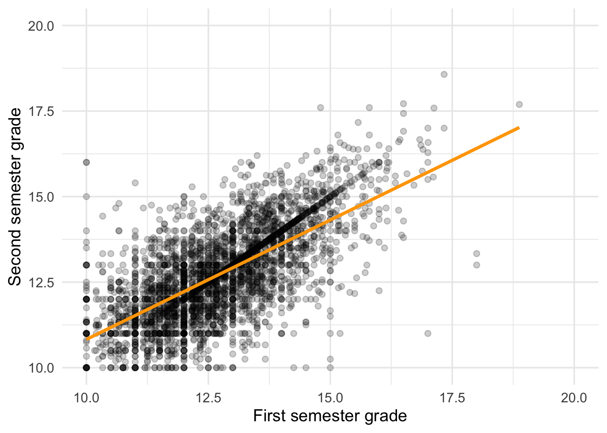
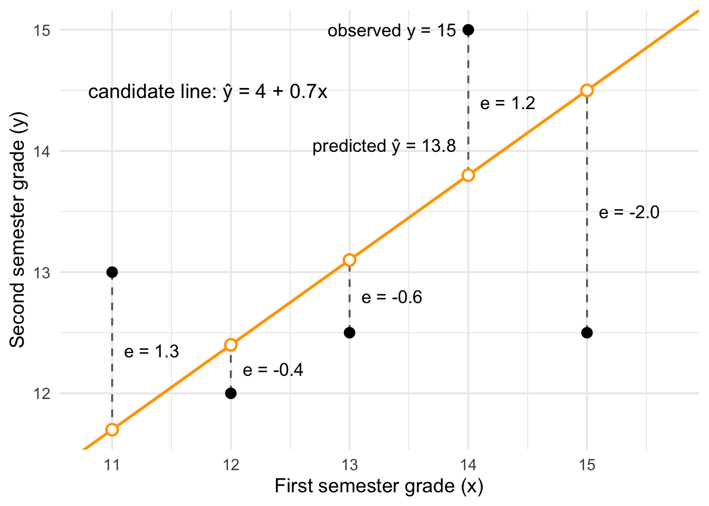
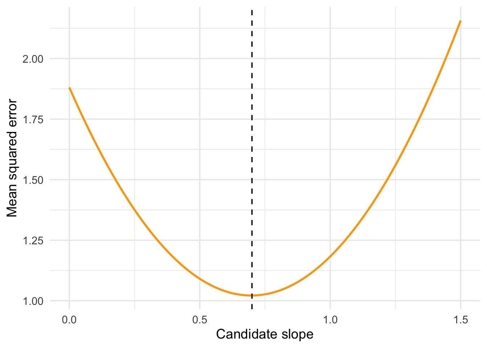
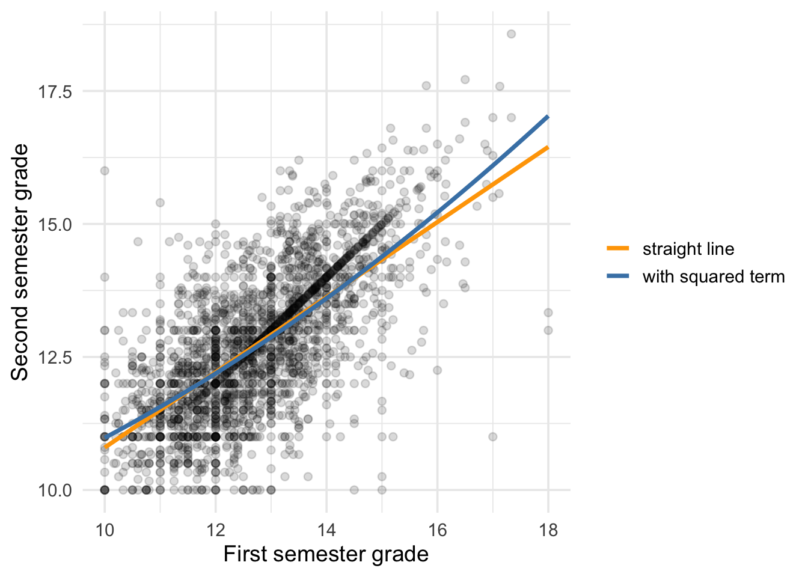

library(dplyr) # data manipulation and the pipe
library(ggplot2) # plots
library(naniar) # missing data visualizationSimple Linear Regression
Linear regression is usually taught as a statistical model for testing hypotheses.
In this course we will generally treat linear regression as a prediction algorithm.
In this way it learns coefficients from data by minimizing a loss function, uses them to predict new cases, and gets evaluated on data it has never seen.
For now we will skip a discussion of inference in linear regression, but for those who are interested the material can be found here: Inference in Linear Regression.
Setup
We use the student dropout and academic success data throughout the regression unit. The same dataset returns in Multiple Linear Regression and again in the logistic regression pages, where the outcome changes to a dichotomous variable.
- 4,424 students from a Portuguese higher education institution.
- 36 features covering demographics, socio-economic background, and academic record.
- Grades are on the Portuguese 0 to 20 scale.
- Download
dropout.csv, or get it from the UCI Repository.
# The file is semicolon separated, which is common in European data, so
# read.csv needs to be told that with sep = ";"
dropout <- read.csv("data/dropout.csv", sep = ";")
# The original column names are long and full of dots once R cleans them up.
# Renaming the handful we use keeps the code below readable.
dropout <- dropout %>%
rename(
grade_sem1 = Curricular.units.1st.sem..grade.,
grade_sem2 = Curricular.units.2nd.sem..grade.,
admission_grade = Admission.grade,
age = Age.at.enrollment,
scholarship = Scholarship.holder,
fees_current = Tuition.fees.up.to.date
)
dim(dropout)[1] 4424 371. What Problem Does Linear Regression Solve?
Linear regression predicts a continuous outcome from one or more input variables.
Our question: can we predict a student’s second semester grade from their first semester grade?
That is a regression problem because the answer is a number, a grade somewhere on the 0 to 20 scale.
A Data Decision First
Before modelling anything, look at the data. Start where the Missing Data page told you to start.
# Black would mark missing values, gray observed ones.
# 37 column names are too many to read, so they are hidden.
vis_miss(dropout, warn_large_data = FALSE) +
labs(x = "37 columns") +
theme(axis.text.x = element_blank())
The plot is entirely gray, so no values are missing.
# Confirm it directly
sum(is.na(dropout))[1] 0So the data look clear but let’s dig a little further.
Plotting the Data
Look at the outcome itself rather than at its missingness.
ggplot(dropout, aes(grade_sem2)) +
geom_histogram(bins = 60, fill = "orange") +
labs(x = "Second semester grade", y = "Number of students") +
theme_minimal(base_size = 14)
There is a tall spike at zero, then nothing at all until 10.
# How many students sit at exactly zero?
sum(dropout$grade_sem2 == 0)[1] 870# What is the lowest grade among everybody else?
min(dropout$grade_sem2[dropout$grade_sem2 > 0])[1] 10The zeros are not low grades. Here zero might be a missingness code:
# Of the students with a grade of zero, how many approved zero units?
dropout %>%
filter(grade_sem2 == 0) %>%
summarise(
students = n(),
approved_no_units = sum(Curricular.units.2nd.sem..approved. == 0)
) students approved_no_units
1 870 870Every student with a grade of zero completed no curricular units, so there was no grade to record and the field was filled with a zero instead.
Mixing these two groups would mean fitting one line through students who completed units and students who completed none.
# Keep students who actually completed units in both semesters
completers <- dropout %>%
filter(grade_sem1 > 0, grade_sem2 > 0)
nrow(completers)[1] 3512summary(completers$grade_sem2) Min. 1st Qu. Median Mean 3rd Qu. Max.
10.00 11.75 12.67 12.75 13.67 18.57 2. From a Scatterplot to a Prediction Equation
Start by looking at the relationship.
ggplot(completers, aes(x = grade_sem1, y = grade_sem2)) +
geom_point(alpha = 0.2) +
geom_smooth(method = "lm", se = FALSE, color = "orange") +
scale_x_continuous(limits = c(10, 20)) +
scale_y_continuous(limits = c(10, 20)) +
labs(x = "First semester grade", y = "Second semester grade") +
theme_minimal(base_size = 14)
The orange line is the prediction equation. Written out, it is:
\[ \hat{y} = b_0 + b_1 x \]
- \(\hat{y}\) is the predicted second semester grade. The hat means predicted rather than observed.
- \(x\) is the first semester grade.
- \(b_0\) is the intercept: the prediction when \(x = 0\).
- \(b_1\) is the slope: how much the prediction moves for a one point increase in \(x\).
This equation produces a prediction for any value of \(x\), including values no student in the data had. That is what makes it a prediction algorithm.
Our intercept and slope coefficients from a regression are estimates of parameters learned from the data, not hyperparameters supplied during learning.
3. How Does the Algorithm Learn?
The algorithm does not know the right coefficients in advance. It searches for the coefficients that make its predictions as close as possible to the observed outcomes.
To do that it needs a definition of how close a prediction is.
Residuals
For each student, the residual is what the model got wrong:
\[ e_i = y_i - \hat{y}_i \]
Observed minus predicted. A positive residual means the student did better than predicted, a negative one means worse.
Residuals cannot simply be averaged, because the positives and negatives would cancel. So we square them first, which also makes large misses count for much more than small ones.
The Loss Function
Averaging the squared residuals gives the mean squared error:
\[ \operatorname{MSE} = \frac{1}{n}\sum_{i=1}^{n}(y_i - \hat{y}_i)^2 \]
This is the loss function. It is a single number scoring how badly a given pair of coefficients does. Fitting the model means choosing \(b_0\) and \(b_1\) to make that number as small as possible.
Fitting a model means finding the coefficients that minimize a loss function.
This idea stays true for nearly every algorithm in the rest of the course. What changes later is the shape of the prediction equation and sometimes the choice of loss function. The idea of minimizing a loss does not change.
Scoring One Candidate Line
Before searching over many coefficients, score one candidate by hand. Suppose the algorithm tries \(b_0 = 4\) and \(b_1 = 0.7\). Take a student whose first semester grade was 14 and whose second semester grade was 15.
\[ \begin{aligned} \hat{y} &= b_0 + b_1 x = 4 + 0.7 \times 14 = 13.8 \\ e &= y - \hat{y} = 15 - 13.8 = 1.2 \\ e^2 &= 1.2^2 = 1.44 \end{aligned} \]
- Plug in the coefficients and the student’s \(x\) to get the prediction \(\hat{y}\).
- Subtract the prediction from the observed \(y\) to get the residual \(e\).
- Square the residual so it can be averaged.
Now do the same thing for five students.
# One candidate pair of coefficients
b0 <- 4
b1 <- 0.7
# Five real students from the data
five <- dropout %>%
slice(3949, 551, 2860, 2066, 2494) %>%
select(grade_sem1, grade_sem2) %>%
mutate(
y_hat = b0 + b1 * grade_sem1, # plug x into the equation
residual = grade_sem2 - y_hat, # observed minus predicted
squared = residual^2
)
five grade_sem1 grade_sem2 y_hat residual squared
1 11 13.0 11.7 1.3 1.69
2 12 12.0 12.4 -0.4 0.16
3 13 12.5 13.1 -0.6 0.36
4 14 15.0 13.8 1.2 1.44
5 15 12.5 14.5 -2.0 4.00# Average the squared residuals to get the MSE for this candidate line
mean(five$squared)[1] 1.53The student from the formula is the fourth row. In the plot:
- Filled dots are the observed grades \(y\).
- Open dots on the orange line are the predictions \(\hat{y}\).
- Dashed segments are the residuals \(e\).

For these five students, the MSE of this candidate line is 1.53. Change \(b_0\) or \(b_1\) and the line moves. Every \(\hat{y}\) changes, every residual changes, and the MSE changes with them. Fitting is the search for the line where that number is smallest.
Rather than trusting lm(), try a range of slopes and compute the loss for each:
# Fix the intercept at a sensible value and try many slopes
try_slopes <- seq(0, 1.5, by = 0.01)
# For each candidate slope, compute the mean squared error it produces
loss <- sapply(try_slopes, function(b1) {
b0 <- mean(completers$grade_sem2) - b1 * mean(completers$grade_sem1)
pred <- b0 + b1 * completers$grade_sem1
mean((completers$grade_sem2 - pred)^2)
})
# The slope with the smallest loss
try_slopes[which.min(loss)][1] 0.7ggplot(data.frame(slope = try_slopes, mse = loss), aes(slope, mse)) +
geom_line(color = "orange", linewidth = 1) +
geom_vline(xintercept = try_slopes[which.min(loss)], linetype = "dashed") +
labs(x = "Candidate slope", y = "Mean squared error") +
theme_minimal(base_size = 14)
The curve has one bottom, and the dashed line marks it. That is the slope the algorithm picks. lm() finds this point directly with algebra rather than by trying values, but it is solving the same problem.
Fitting It Properly
fit <- lm(grade_sem2 ~ grade_sem1, data = completers)
coef(fit)(Intercept) grade_sem1
3.8489194 0.6978087
NoteR’s Formula Syntax:
y ~ x
The first argument to lm() is a formula, written with the tilde ~. Read the tilde as “modeled as a function of”: grade_sem2 ~ grade_sem1 means “predict grade_sem2 using grade_sem1.” The target always goes on the left of the ~ and the features go on the right. Two extensions you will see soon:
- Multiple features are joined with
+, e.g.y ~ x1 + x2. y ~ .is shorthand for “use all other variables in the data as features.”
This formula syntax is not specific to lm(). The same pattern reappears in glm(), caret, tidymodels, and most modeling functions in R, so it is worth getting comfortable with now.
Reading the coefficients as predictions rather than as findings:
- The intercept is the predicted second semester grade for a student whose first semester grade was 0. No student in
completershas a grade of 0, so this is a number the equation needs rather than a claim about anybody. - The slope says that two students one grade point apart in the first semester are predicted to be about that fraction of a point apart in the second.
Substitute a value to make a prediction by hand:
b <- coef(fit)
# A student who scored 14 in the first semester
b[1] + b[2] * 14(Intercept)
13.61824 # The same thing, done properly
predict(fit, newdata = data.frame(grade_sem1 = 14)) 1
13.61824 4. Training Performance Versus Generalization
Everything so far used all the data at once. That tells us how well the line fits the students we already have, which is not the question we care about.
The question is how well it predicts students we have never seen.
set.seed(559)
# 70 percent of rows for training, the rest held back
n <- nrow(completers)
train_idx <- sample(n, size = floor(0.7 * n))
train <- completers[train_idx, ]
test <- completers[-train_idx, ]
c(train = nrow(train), test = nrow(test))train test
2458 1054 # Estimate the coefficients using the training data only
fit_train <- lm(grade_sem2 ~ grade_sem1, data = train)
# Then predict the students the model has never seen
predictions <- predict(fit_train, newdata = test)
head(round(predictions, 2)) 4 6 7 10 15 16
12.11 13.54 11.79 11.20 11.98 11.81 This is the overarching objective of the course: the coefficients (estimates of the parameters) come from the training data, the evaluation comes from the test data.
5. How Do We Evaluate Predictions?
We have predictions and we have the truth. Now we need a number summarizing how far apart they are.
actual <- test$grade_sem2
residuals <- actual - predictions
# MAE: average size of the error, ignoring direction
mae <- mean(abs(residuals))
# RMSE: square, average, then undo the squaring. Large misses count more.
rmse <- sqrt(mean(residuals^2))
c(MAE = mae, RMSE = rmse) MAE RMSE
0.7752931 1.0063456 Both are in grade points, which is what makes them easy to talk about. An MAE of roughly 0.8 means the typical prediction is off by about eight tenths of a grade point on a 20 point scale.
NoteMSE Versus RMSE
Section 3 fit the model by minimizing MSE. Here we report RMSE. The two are closely related.
- RMSE is the square root of MSE. That is the only difference between them.
- MSE is in squared units. Here that means squared grade points, which are hard to interpret.
- RMSE is back in the original units. The square root returns it to grade points, so it can be read next to MAE.
- Both pick the same model. The coefficients with the smallest MSE also have the smallest RMSE, because taking a square root does not change which number is smaller.
- An example: if every prediction missed by 2 grade points, the MSE would be 4 and the RMSE would be 2.
The usual habit is to minimize MSE when fitting, because the math is simpler, and to report RMSE when evaluating, because it is easier to read. On this test set the two happen to be almost equal, because the MSE is close to 1.
R squared answers a different question, namely how much of the outcome’s variation the model accounts for:
r2 <- 1 - sum(residuals^2) / sum((actual - mean(actual))^2)
r2[1] 0.4531134It is unitless, which makes it easy to compare across problems and easy to over read. For a first lecture, prefer MAE and RMSE, because their units are the units of the thing you are predicting.
Always Compare Against a Baseline
A metric on its own is hard to judge. Whether an RMSE of 1.0 is good depends on what you compare it to.
The simplest baseline ignores the predictor entirely and guesses the same value for everybody. The right value to guess is the training mean, because the test set is supposed to be unavailable when you build anything.
baseline_prediction <- mean(train$grade_sem2)
baseline_mae <- mean(abs(actual - baseline_prediction))
baseline_rmse <- sqrt(mean((actual - baseline_prediction)^2))
rbind(
model = c(MAE = mae, RMSE = rmse),
baseline = c(MAE = baseline_mae, RMSE = baseline_rmse)
) MAE RMSE
model 0.7752931 1.006346
baseline 1.0834865 1.361074The model is better than guessing the average, and the table shows by how much.
6. From One Predictor to Several
Nothing about the machinery changes when you add predictors. The equation just gets longer:
\[ \hat{y} = b_0 + b_1 x_1 + b_2 x_2 \]
Each coefficient describes how the prediction changes for a one unit increase in its own predictor, holding the others constant.
fit_multi <- lm(grade_sem2 ~ grade_sem1 + admission_grade + scholarship,
data = train)
coef(fit_multi) (Intercept) grade_sem1 admission_grade scholarship
3.03836323 0.67528895 0.00822168 0.16012839 Did it help?
pred_multi <- predict(fit_multi, newdata = test)
c(one_predictor = rmse,
three_predictors = sqrt(mean((actual - pred_multi)^2))) one_predictor three_predictors
1.006346 1.006006 Only slightly. Multiple Linear Regression looks at this in more detail.
7. What Does “Linear” Actually Mean?
Students often assume linear regression can only describe straight lines. It can also describe curves.
Linear regression is linear in its coefficients, not in its predictors. The predictors can be transformed however you like, and the model is still a linear model.
# A squared term is allowed. I() tells R to treat ^2 as arithmetic
# rather than as special formula syntax.
fit_curved <- lm(grade_sem2 ~ grade_sem1 + I(grade_sem1^2), data = train)
coef(fit_curved) (Intercept) grade_sem1 I(grade_sem1^2)
7.94206832 0.05238366 0.02514251 ggplot(train, aes(grade_sem1, grade_sem2)) +
geom_point(alpha = 0.15) +
geom_smooth(method = "lm", formula = y ~ x, se = FALSE,
aes(color = "straight line")) +
geom_smooth(method = "lm", formula = y ~ x + I(x^2), se = FALSE,
aes(color = "with squared term")) +
scale_color_manual(values = c("straight line" = "orange",
"with squared term" = "steelblue"), name = NULL) +
labs(x = "First semester grade", y = "Second semester grade") +
theme_minimal(base_size = 14)
If the true pattern curves and you insist on a straight line, the model is underfitting: it is too simple to capture what is there, and it will be wrong in a systematic, predictable direction rather than at random.
8. When Might Linear Regression Fail?
Predictors That Are Pure Noise
Here we add 20 predictors of random numbers to a small training sample of 30 students.
set.seed(559)
small_train <- train[1:30, ]
noise_test <- test
# 20 columns of pure random noise, in both the training and test data
for (j in 1:20) {
small_train[[paste0("noise", j)]] <- rnorm(nrow(small_train))
noise_test[[paste0("noise", j)]] <- rnorm(nrow(noise_test))
}
f <- as.formula(paste("grade_sem2 ~ grade_sem1 +",
paste0("noise", 1:20, collapse = " + ")))
fit_noise <- lm(f, data = small_train)
# How good does it look on the data it was fit to?
summary(fit_noise)$r.squared[1] 0.8867479The training R squared is high. Now score the model on students it has never seen, alongside a model with only grade_sem1 and the baseline:
fit_small <- lm(grade_sem2 ~ grade_sem1, data = small_train)
c(
with_noise = sqrt(mean((noise_test$grade_sem2 - predict(fit_noise, noise_test))^2)),
no_noise = sqrt(mean((test$grade_sem2 - predict(fit_small, test))^2)),
baseline = sqrt(mean((test$grade_sem2 - mean(small_train$grade_sem2))^2))
)with_noise no_noise baseline
3.315435 1.008197 1.388660 The model with the noise predictors has a higher test RMSE than the baseline, so it predicts worse than guessing the average. The random columns carry no information, yet the training fit improved. With many predictors and few rows, a model can fit the noise in its training data.
This is overfitting.
Extrapolation
# No student in the data has a first semester grade of 2, or of 25
predict(fit, newdata = data.frame(grade_sem1 = c(2, 25))) 1 2
5.244537 21.294136 R returns both predictions without a warning, even though 2 is far below anything in the data and 25 is not a possible grade on the 0 to 20 scale.
Next: Multiple Linear Regression.